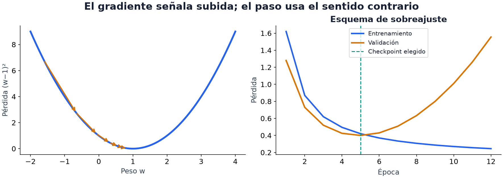

11 · Entrenar de verdad
Nivel 2 — Deep learning · Ruta de Aprendizaje
Ya sabemos actualizar pesos. ¿Cuándo esas actualizaciones producen un modelo útil? La pérdida de entrenamiento cuenta cómo ajustamos los ejemplos vistos; la validación pregunta qué ocurre fuera de ellos. Leer ambas evita confundir aprender el conjunto de entrenamiento con aprender una relación reutilizable.

Mira el panel derecho: la curva azul sigue bajando después de la época 5, pero la naranja empieza a subir. Si queremos minimizar esa pérdida de validación, guardamos el estado de la época 5. Entrenar más y elegir un checkpoint anterior son decisiones compatibles. Las curvas son ilustrativas, no un resultado medido de una tarea.
Leer curvas como pistas
Una época recorre el cargador de entrenamiento. Al terminar podemos medir pérdida y métrica en train y validación, sin actualizar pesos durante esa medición. El baseline ayuda a decidir qué significa «alta» o «baja» en cada tarea.
| Lo que ves | Posibles explicaciones | Qué comparación ayuda |
|---|---|---|
| Ambas curvas casi planas y lejos del baseline deseado | paso muy pequeño, gradientes ausentes, datos o pérdida mal conectados | comprobar una actualización y si el modelo puede ajustar unos pocos ejemplos |
| Ambas mejoran pero se estabilizan con mucho error | capacidad insuficiente, optimización detenida o poca señal en los datos | más entrenamiento o capacidad, junto a una inspección de errores |
| Train mejora mientras validación empeora | posible sobreajuste o diferencia entre ambos conjuntos | revisar el split, guardar checkpoints y comparar regularización |
| Oscilaciones grandes o valores no finitos | paso excesivo, gradientes enormes, entradas o cálculos inválidos | localizar la primera operación no finita y probar cambios concretos |
Son hipótesis, no diagnósticos únicos. Un entrenamiento sano por lotes puede oscilar. Además, la pérdida registrada con dropout o aumentos de datos activos no es directamente comparable con una validación sin ellos. Medir ambos conjuntos bajo el mismo modo ayuda a interpretar la distancia entre curvas.
El tamaño del paso
La parábola del módulo 10 separaba tres comportamientos: avanzar lentamente, acercarse al mínimo y saltar de un lado a otro. El learning rate influye de una forma parecida en redes, aunque el paisaje tenga muchos pesos y cada lote aporte una estimación distinta del gradiente.
Comparar valores separados por un factor de diez permite explorar escalas.
Con AdamW, 1e-3 puede ser un punto de partida para una red pequeña desde cero;
no es un valor universal. Al adaptar pesos preentrenados suele convenir explorar
pasos menores para no alterar demasiado su representación. Importan también el
lote, la pérdida, la arquitectura y qué parámetros se entrenan.
Un scheduler o planificador cambia esa tasa durante el entrenamiento.
Este fragmento usa un descenso cosenoidal a lo largo de epocas:
# bloque: fragmento
optimizador = torch.optim.AdamW(modelo.parameters(), lr=1e-3)
planificador = torch.optim.lr_scheduler.CosineAnnealingLR(optimizador, T_max=epocas)
for epoca in range(epocas):
entrenar_una_epoca(...)
planificador.step()El planificador avanza después de entrenar cada época. Cambiar la tasa puede facilitar pasos finos al final, pero su efecto se compara con una tasa fija; no añade una mejora garantizada.
Optimizadores: distintas formas de usar el gradiente
SGD actualiza los parámetros con el gradiente del lote. Con momentum, combina el gradiente actual con una memoria de direcciones anteriores: una inercia que puede suavizar zigzags.
Adam mantiene promedios de gradientes y de sus cuadrados para adaptar la escala del paso por parámetro. AdamW separa de esa adaptación el decaimiento de pesos. Esa distinción importa al regularizar; no significa que Adam esté mal definido ni que AdamW gane siempre.
AdamW ofrece un comienzo práctico para muchos ejemplos de la ruta. SGD con momentum también puede funcionar bien. Compararlos requiere considerar el resultado de validación y cuánto cuesta llegar a él.
Batch size
El batch size es cuántos ejemplos se procesan juntos. Promediar gradientes de más ejemplos suele reducir el ruido de la estimación. Un lote mayor también guarda más resultados intermedios, llamados activaciones, y necesita más memoria; en GPU puede aprovechar mejor el paralelismo hasta cierto punto.
Reducir el lote puede hacer que un entrenamiento quepa. Para conservar un promedio sobre más ejemplos sin procesarlos todos juntos, el módulo 15 presenta acumulación de gradientes.
Con los mismos datos, un lote menor produce más actualizaciones por época. Por eso comparar solo «diez épocas» no iguala el número de pasos. La tasa no cambia automáticamente, pero su efecto y el del planificador pueden cambiar; conviene mirar también pasos, ejemplos procesados y tiempo.
Regularizar: limitar cómo se ajusta el modelo
La regularización favorece soluciones que no dependan tanto de detalles particulares del entrenamiento. Puede reducir sobreajuste, pero demasiada puede impedir aprender señal útil.
Dropout. Durante el entrenamiento pone a cero activaciones elegidas al azar. La red debe producir respuestas usando distintas combinaciones de señales, lo que puede reducir dependencias frágiles entre ellas.
# bloque: fragmento
import torch
import torch.nn as nn
d = nn.Dropout(0.5)
t = torch.ones(6)
d.train(); print(d(t)) # p.ej. tensor([0., 0., 2., 0., 0., 0.]) ← apaga y escala
d.eval(); print(d(t)) # tensor([1., 1., 1., 1., 1., 1.]) ← no hace nadaCon p=0.5, cada activación sobrevive con probabilidad 0.5 y se multiplica por
2: su valor promedio entre muchas máscaras se conserva. En eval() dropout
es la identidad. En el MLP de clasificación se coloca entre capas ocultas,
para conservar el contrato de la salida que interpreta la pérdida. Su ubicación
en otras arquitecturas depende de qué operación queremos regularizar.
Weight decay. Reduce los pesos en cada actualización. Está relacionado
con la penalización L2 del módulo 06, pero en un optimizador adaptativo añadir
L2 a la pérdida no equivale al decaimiento separado de AdamW. Se configura con: AdamW(params, lr=1e-3, weight_decay=0.01).
Early stopping. Detener el entrenamiento tras varias épocas sin mejora de validación. Ese margen se llama paciencia: evita parar por un único pequeño retroceso. La receta Early stopping ayuda a elegir cuánto entrenar y puede ahorrar tiempo; sus decisiones siguen dependiendo del ruido de la validación.
Y el detalle que la receta advierte: detectar cuándo parar no es lo mismo que quedarse con el mejor modelo. Hay que guardar los pesos de la mejor época, no los de la última:
Un checkpoint es una instantánea del estado del modelo. En el bloque,
entrenar_y_validar(...) debe entrenar una época y devolver su pérdida de
validación finita; EarlyStopping viene de la receta. Primero se registra la
pérdida de esta época y después se decide si guardar su estado.
state_dict() incluye pesos y otros estados, como los promedios de BatchNorm.
clone() hace una copia independiente: guardar solo referencias permitiría que
las actualizaciones siguientes modificaran también el supuesto «mejor modelo».
Mover la copia a CPU evita reservarla en la memoria de la GPU.
# bloque: probado; id: checkpoint
mejor = None
parada = EarlyStopping(paciencia=3, modo="min")
for epoca in range(epocas):
perdida_val = entrenar_y_validar(...)
detener = parada.paso(perdida_val) # registrar esta época PRIMERO
if parada.mejor_epoca == parada.epoca:
mejor = {k: v.detach().cpu().clone() for k, v in modelo.state_dict().items()}
if detener:
break
if mejor is None:
raise ValueError("se necesita al menos una época para guardar un checkpoint")
modelo.load_state_dict(mejor)BatchNorm. Normaliza activaciones usando estadísticas por feature o canal,
según la capa. Con su configuración habitual, en train() usa estadísticas del
lote y actualiza promedios acumulados; en eval() usa esos promedios. Puede
facilitar el entrenamiento, pero con lotes pequeños o distribuciones distintas
su comportamiento requiere atención. Su función principal es normalizar; sus
efectos regularizadores dependen del contexto.
Inicialización. Es el punto desde donde empieza la búsqueda. PyTorch inicializa las capas comunes con reglas pensadas para mantener escalas razonables. Si todas las neuronas de una capa oculta empiezan idénticas, pueden recibir el mismo gradiente y seguir siendo indistinguibles. Eso limita lo que la capa aprende. No significa que cualquier modelo iniciado en cero sea incapaz de aprender: una regresión lineal sí puede hacerlo.
Dos controles distintos: eval() y no_grad()
Dropout y batch norm se comportan distinto entrenando y evaluando. Si
evalúas sin llamar a modelo.eval(), el dropout sigue apagando neuronas al azar
y la batch norm sigue actualizando sus estadísticas con tus datos de validación.
Entonces evalúas otro comportamiento y puedes modificar el estado del modelo
con datos que estaban reservados.
# bloque: fragmento
modelo.eval()
with torch.no_grad():
predicciones = modelo(X_val)
modelo.train() # volver a entrenar requiere volver a train()Es habitual combinar ambas para una evaluación determinista y sin cálculo de
gradientes. Una no sustituye a la otra: eval() no congela parámetros, y
no_grad() no desactiva dropout. Para estudiar gradientes de una predicción
podrías necesitar eval() sin no_grad().
Una excepción real del contrato
IOAI Field (2026) exigía que el dropout siguiera activo en inferencia: una de las regiones se puntuaba por la desviación entre diez evaluaciones del mismo punto, y el enunciado prohibía usar
torch.rand— la aleatoriedad tenía que venir del dropout. Ahíeval()habría dado puntaje cero en esa región. Es un buen recordatorio de que la regla es «haz lo que pide el enunciado», no «aplica el hábito».
🏋️ Práctica
| # | Ejercicio | Fuente | Qué practica |
|---|---|---|---|
| 1 | MNIST con un MLP: grafica las dos curvas en cada experimento | Kaggle Digit Recognizer | leer las curvas |
| 2 | Provoca los cuatro casos de la tabla a propósito | — | contrastar síntomas con sus causas |
| 3 | Barre learning rate en {1e-1, 1e-2, 1e-3, 1e-4} con 5 épocas cada uno | — | comparar escalas de actualización |
| 4 | Sobreajusta un MLP grande en MNIST y arréglalo con dropout, weight decay y early stopping, uno a la vez | Early stopping | qué arregla cada herramienta |
| 5 | Evalúa el mismo modelo con y sin eval() y compara los números | — | ver el tamaño del error |
Cambiar una técnica a la vez ayuda a interpretar su efecto. Después pueden compararse combinaciones: dos formas de regularización también interactúan.
🎯 Mini-desafío (formato IOAI)
Tarea: IOAI Field (IOAI 2026, día 2), versión reducida — ajusta solo la región del fondo y la letra A (que vale constante −1). Métrica de esta adaptación: calcula MAE en el fondo y en A por separado, y promedia ambos MAE con el mismo peso; menor es mejor. Reserva coordenadas distintas para entrenar y validar, con semilla 0. Baseline local: predecir siempre cero, evaluado en esas mismas regiones y coordenadas. Entrega los dos MAE y el promedio antes y después de entrenar. Los valores 31.22 y 63.53 corresponden al score oficial completo de cinco regiones; no son umbrales de esta adaptación. Restricción conservada: como máximo 20.260 parámetros; exceder esa cantidad penaliza el score oficial. Verifícalo con Contar parámetros antes de entrenar.
El presupuesto de parámetros permite comparar capacidad, optimización y generalización sin resolverlo todo aumentando la red. Esta adaptación se evalúa localmente; completar el contrato oficial exige las cinco regiones, su grader y los archivos
solution.ipynbycustom_model.py.
Para explorar
El laboratorio Qué aprende un bucle de entrenamiento muestra curvas, checkpoints y el efecto de barajar las etiquetas por separado.
Encuentra dos entrenamientos con una pérdida final parecida y curvas muy distintas. ¿Elegirías el mismo checkpoint en ambos?
Vuelve a evaluar un checkpoint con dropout activo y desactivado. La diferencia
separa lo que controla eval() de lo que controla no_grad().
← 10 - Gradientes y backpropagation · Ruta de Aprendizaje · 12 - Embeddings →